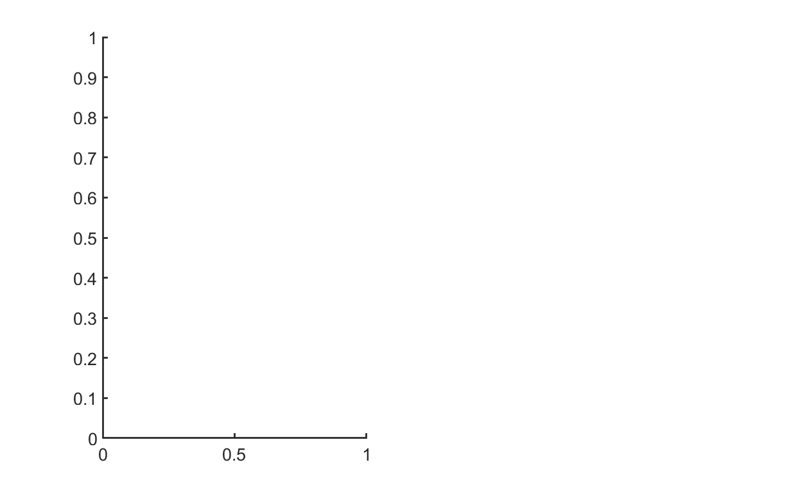
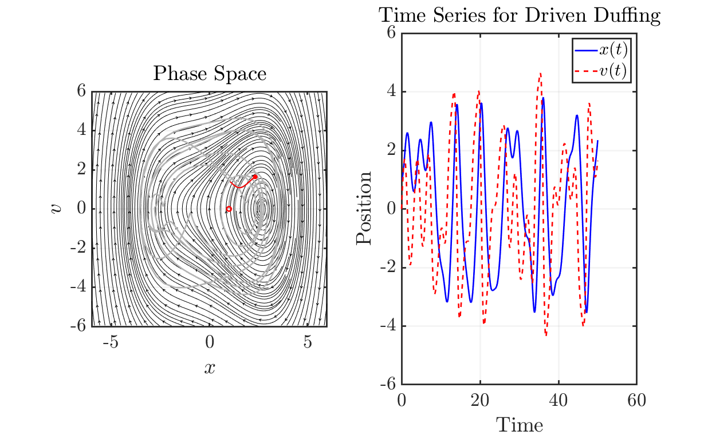

Contents
Duffing Equation (Phase Space Solution Trajectory)
Tyler Jones tjjones6@wisc.edu 04.10.2024
clear all; close all; clc % Parameter Library alpha = -1; beta = 0.25; gamma = 2.5; omega = 2; delta = 0.1;
Simulation and Visualization Loop
% Rewritten x_dot = @(x,v) v; v_dot = @(x,v,t) gamma*cos(omega*t) - delta*v - alpha*x - beta*x.^3; % Solve Duffing Equation via ODE45 Duff_Eq = @(t, Y) [Y(2); gamma*cos(omega*t) - delta*Y(2) - alpha*Y(1) - beta*Y(1).^3]; IC = [1,0]; tspan = [0,50]; [t, Y] = ode45(Duff_Eq, tspan, IC); % --- % Generate mesh % --- bound = 6; xx = linspace(-bound,bound,30); yy = linspace(-bound,bound,30); [XX,YY] = meshgrid(xx,yy); UU = x_dot(XX,YY); VV = v_dot(XX,YY,t(1)); % Only first time step % Begin time stepping figure('units','normalized','Position',[0.1 0.1 .8 .8]) % myWriter = VideoWriter('DuffingEquationPhaseSpace.mp4', 'MPEG-4'); % myWriter.FrameRate = 30; % open(myWriter); % Phase Portrait subplot(1,2,1); hold on myfigpref fig_xytit('$x$','$v$','Phase Space') strmslice1 = streamslice(XX, YY, UU, VV, 5); set(strmslice1, 'Color', 'black','linewidth',0.5); plot(Y(:,1),Y(:,2),'Color',[0.7,0.7,0.7]) plot(IC(1),IC(2),'or') axis([min(xx) max(xx) min(yy) max(yy)]) hold off % Time series subplot(1,2,2); hold on grid on myfigpref fig_xytit('Time','Position','Time Series for Driven Duffing') plot(t(1), Y(:,1),'b','DisplayName','$x(t)$') plot(t(1), Y(:,2),'--r','DisplayName','$v(t)$') ylim([-bound bound]) legend('location','ne','Interpreter','latex') hold off for i = 1:length(t) clf; % Update VV (Due to forcing term) VV = v_dot(XX,YY,t(i)); % Phase Portrait subplot(1,2,1) hold on myfigpref fig_xytit('$x$','$v$','Phase Space') % quiver(XX,YY,UU,VV,'Color',[0.7,0.7,0.7],'LineWidth',1.5); strmslice1 = streamslice(XX, YY, UU, VV, 5); set(strmslice1, 'Color', 'black','linewidth',0.5); plot(Y(1:i,1),Y(1:i,2),'Color',[0.7,0.7,0.7]) plot(IC(1),IC(2),'or') if i >= 11 plot(Y(i-10:i,1),Y(i-10:i,2),'r','LineWidth',1.5) % Plot the solution trajectory end if i < 11 plot(Y(1:i,1),Y(1:i,2),'r','LineWidth',1.5) % Plot the solution trajectory end plot(Y(i,1),Y(i,2),'r*') axis equal axis([min(xx) max(xx) min(yy) max(yy)]) hold off % Time series subplot(1,2,2) hold on grid on myfigpref fig_xytit('Time','Position','Time Series for Driven Duffing') plot(t(1:i),Y(1:i,1),'b','DisplayName','$x(t)$') plot(t(1:i),Y(1:i,2),'--r','DisplayName','$v(t)$') ylim([-bound bound]) legend('location','ne','Interpreter','latex') hold off pause(0.01) % frame = getframe(gcf); % writeVideo(myWriter,frame); end % close(myWriter)
Plotting Reference Functions
function myfigpref % MYFIGPREF just makes figures pretty. Written by TGJChandler % % Last edited: 01/01/2018 by TGJChandler % % Comment by Tyler Jones: Thomas Chandler was my professor for math % 415 (Applied Dynamical Systems, Chaos, and Modeling) @UW-Madison set(0, 'DefaultAxesFontSize', 20) set(0, 'DefaultAxesLineWidth', 2); set(0, 'DefaultLineLineWidth', 2); set(0, 'DefaultPatchLineWidth', .7); set(0, 'DefaultLineMarkerSize', 6); grid on; box on; h = gca; h.TickLabelInterpreter='latex'; h.MinorGridAlpha=0.05; h.GridAlpha=0.05; h.FontSize=25; h.LineWidth=2; h = gcf; h.Color = [1,1,1]; end function fig_xytit(xlab, ylab, tit) % FIG_XYTIT sets the current figure's xlabel, ylabel, and title % in latex format. % % Last edited: 15/06/2021 by TGJChandler if nargin<3 tit = ''; end xlabel(xlab,'interpreter','latex') ylabel(ylab,'interpreter','latex') title(tit,'interpreter','latex') end